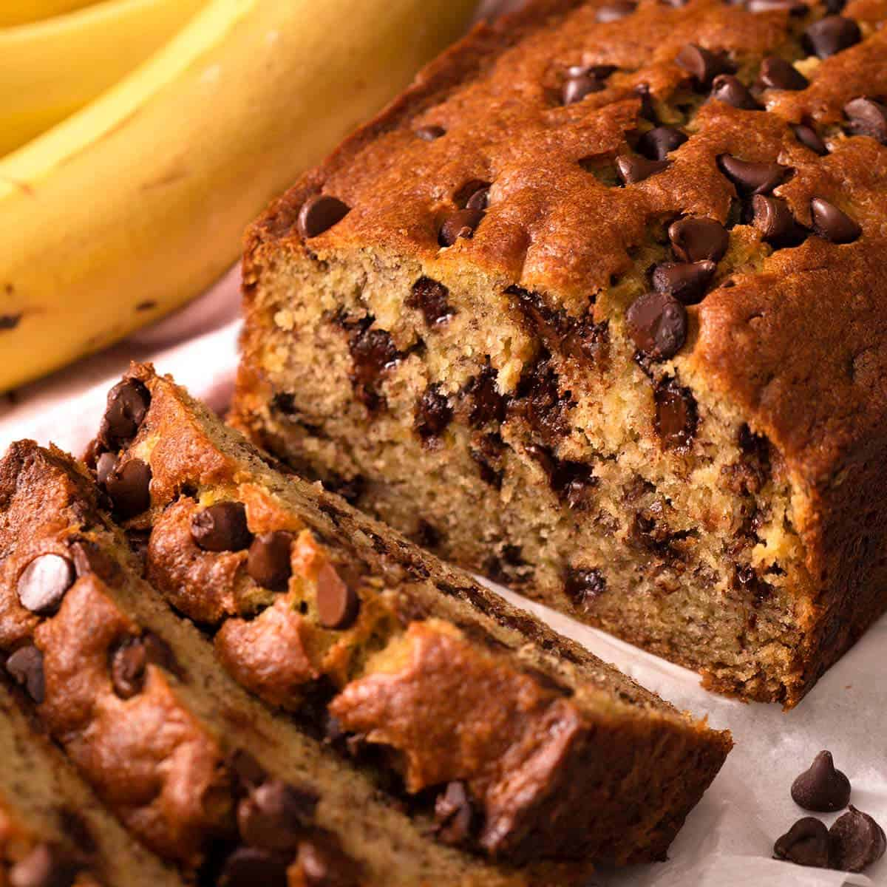

My Favorite Recipe
Chocolate Chip Banana Bread

Ingredients
- 1 & ½ cups (180g) all-purpose flour
- 1 teaspoon baking soda
- ½ teaspoon salt
- ½ cup (1 stick / 115g) unsalted butter, melted and cooled slightly
- ¼ cup (60mL) vegetable oil
- ¾ cup (150g) granulated sugar
- 2 large eggs
- 1 teaspoon pure vanilla extract
- 1 & ½ cups (360g) mashed ripe bananas (about 3-4 medium sized bananas)
- 1 cup (170g) semi-sweet chocolate chips
Instructions
- Preheat your oven to 350°F. Grease a 9x5 inch loaf pan and line the bottom and sides with parchment paper, leaving a bit of parchment paper hanging over the sides to make it easier to pull the loaf out. Set aside.
- In a small bowl, whisk together flour, baking soda, and salt. Set aside.
- In a large bowl, combine butter, oil, sugar, eggs, and vanilla. Whisk to combine. Mix in mashed bananas.
- Add the dry ingredients and chocolate chips to the wet ingredients. Mix until just combined. Take care not to overmix!
- Pour the batter into your prepared loaf pan. Bake in the center of your preheated oven for 50 to 60 minutes, or until a skewer inserted into the center comes out with a few moist crumbs (some melted chocolate on the skewer is fine, too!)
- Cool the bread in your loaf pan until slightly warm or room temperature before slicing and serving!